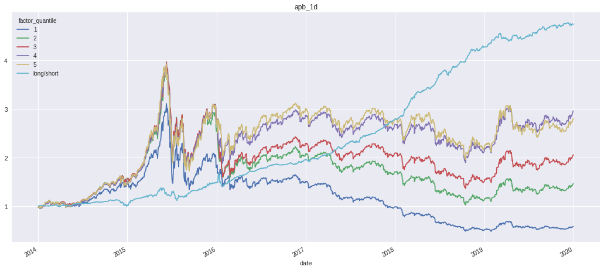
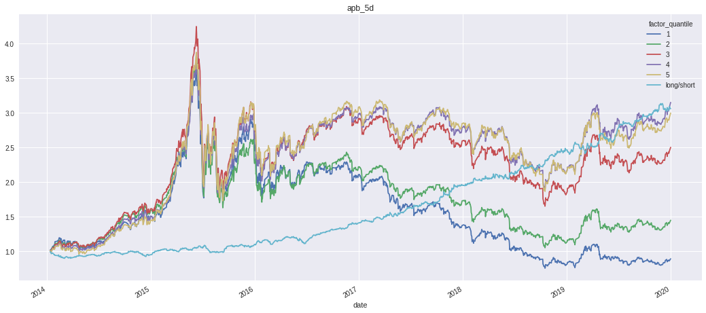
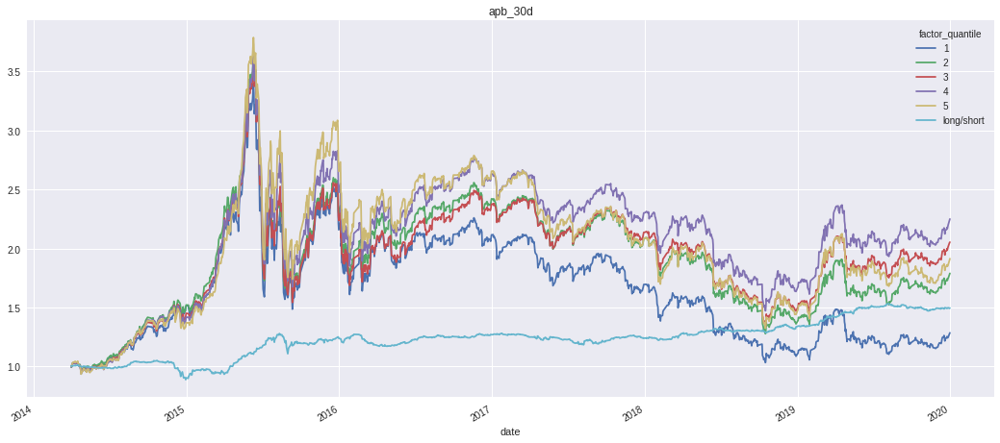

import pandas as pd
import numpy as np
import alphalens # 因子分析
import pickle
import scipy.stats as st
import statsmodels.api as sm
from tqdm import *
from jqdata import *
# 多进程
from CalFunc import * # <===自定义的需要多进程计算的函数
from multiprocessing import Pool
pd.set_option('display.max_r',10)
m_cpu= 2 # cpu几核就设置几
# 日期
import calendar # 日历
from dateutil.parser import parse
# 画图
import seaborn as sns
import matplotlib as mpl
import matplotlib.pyplot as plt
import matplotlib.dates as mdate
import matplotlib.ticker as ticker
import matplotlib.gridspec as mg # 不规则子图
pd.plotting.register_matplotlib_converters()
# 设置字体 用来正常显示中文标签
mpl.rcParams['font.sans-serif'] = ['SimHei']
#plt.rcParams['font.family']='serif' # pd.plot中文
# 用来正常显示负号
mpl.rcParams['axes.unicode_minus'] = False
# 图表主题
plt.style.use('seaborn')
买卖压力度量因子的逻辑#
市场微观分析#
从微观上看，股票的任何一笔成交价格都是买卖双方撮合的结果，在某一特定价格区域，如果买盘量大于卖盘量，低价位卖盘撮合完成后会撮合高价位的卖盘，最终成交价格上涨，相反卖盘量大于买盘，最终成交价格下跌。
我们假设市场上分成两类投资者A和B，在某一时间区间内对某只股票，A类投资者已经根据事先的研究判断决定了买卖方向，等待交易时机，该类投资者一般着眼于中长期，B类交易者对股票没有方向判别，相机而动，属于噪音交易者或者专注于短期投机、短期套利的投资者。从以上的分析我们可以看出，来自B类投资者关注的视野较短，买盘或者卖盘不稳定，买卖的连续性不高，因此本期的买盘卖盘对未来影响不大。我们重点关注 A类投资者，假设投资者已经确定在某时间区间内买入某只股票，那么一个理性的投资者应该在区间内逢低买入，这样就会造成在区间内价格相对较低的位置成交量大，价格相对较高时成交量小， 相反A类投资者卖出时，成交量在价格较高时较大，价格较低时成交量小。通过对A类投资者交易行为分析，我们发现当A类投资者买入时，股票在价格低位的成交量相对于价格高位的成交量大，当A类投资者卖出时，股票在价格低位的成交量相对价格高位的低。
最后，我们要说明的是A类投资者如何识别当前价格是区间内低位还是区间内高位，从技术上讲，投资者只能从左侧看是不是高位或者低位，如果 A类投资者在左侧高位卖出时， 股票价格会向下承压，这样从右侧看处于高位的可能性也较大，相反，如果 A 类投资者在左侧低位买入，股票大概率会上涨，这样从右侧看处于低位的可能性也较大。因此，A 类投资者逢低买入或者逢高卖出是个自适应的过程，即使投资者不能够事先判断局部高位、或者局部低位，也能通过自己的交易行为实现。
两类投资者特点
A类投资者
- 事先既定交易方向
- 等待交易时机
- 着眼于中长期
- 买卖盘稳定性高
- 对后期股票价格影响大
B类投资者
- 事先没有交易方向
- 即时完成交易
- 着眼于短期
- 买卖盘不稳定
- 对后期影响小
综上，如果在在某一区间内A类投资者持续买入，那么成交量在价格低位相对较大，如果持续卖出，那么成交量在价格高位相对较大。因此，我们就可以根据股票价格和成交量的 关系来度量 A 类投资者是买卖压力，考虑到 A 类投资者的投资尺度相对较长，买卖持续性较 强，买入压力较大的股票后期相对收益可能更高，卖出压力较大的股票后期相对收益可能更低。
第一部分：基础数据、函数准备、因子生成#
因子定义#
可以通过股票价格和成交量的关系来度量A类投资者的买卖压力，成交量在价格高位相对更大时卖压较大，成交量在价格低位相对更大时买压更大。成交量和价格的关系会直接影响到区间内成交量加权价格 vwap 的大小，假设成交量和价格没有关系，每个交易日成交量一样，那么区间内价格均值就是每个交易日价格的简单平 均，如果价格高位的成交量大，那么区间内 vwap 较高，如果价格低位的成交量大，那么区间 内 vwap 较低。基于这个思路我们提出了一种度量股票买卖压力的方法，股票 i 在第 m 个月 的均价偏差（average price bias, APB）定义如下：
$\(APB_{i,m}=ln(\frac{\frac{1}{T}\sum^T_{i=1}vwap^{t}_{i,m}}{\frac{1}{\sum^T_{t=1}volu^{t}_{i,m}}\sum^T_{t=1}volu^t_{i,m}·vwap^t_{i,m}})\)$
其中，\(vwap^{t}_{i,m}\) 𝑡 表示股票 i 在第m个月份第 t 个交易日的 vwap 均价，\(volu^t_{i,m}\) 𝑡 表示股票 i在第m个月份第 t 个交易日的成交量，这里均价和成交量都经过复权调整，股票 i 在第m个 月有 T 个交易日，考虑到数据分布，指标取对数化处理。
APB 定义中的分子是各个交易日 vwap 的算术平均值，分母是各个交易日成交量加权的均值，也就是这个月度区间内的 vwap。如果股票在价格高位成交量大，那么成交量加权的均值大于算术平均，APB 取值小于零，相反，如果股票在价格低位成交量大，那么成交量加权的均值小于算术平均，APB 取值大于零，APB 取值越大，股票面临的买压越大，卖压越小。
数据准备#
获取原始行情数据，以及基础函数准备。起始时间为2014-01-01, 结束时间为2020-04-01
生成日度买卖压因子（apb_1d）#
每日基于日内30分钟K线度量APB（30分钟等权加权均价和成交量加权均价之比的对数），过去30个交易日求均值。
每天一共9个三十分钟时间段，少于5个时间段有数据的股票不计算日度因子；在过去30个交易日中，少于15个交易日有因子数据的股票不计算apb_1d因子。
# 设置时间范围
start_date, end_date = '2014-01-01', '2020-04-01'
begin_date = get_trade_days(end_date=start_date,count=30)[0]
# 获取截面成分股
security_list = get_index_stocks('000002.XSHG') + get_index_stocks(
'399107.XSHE')
# 获取日内数据 计算用于apb_1d
def GetData(security_list: list, start_date: str, end_date: str):
days = get_trade_days(start_date, end_date)
temp = []
for trade in tqdm(days, desc='下载中'):
price_df = get_price(
security_list,
start_date=str(trade) + ' 9:30:00',
end_date=str(trade) + ' 15:00:00',
frequency='30m',
fields=['money', 'volume'],
panel=False)
temp.append(get_dailyapb(price_df))
df = pd.concat(temp)
return df
# 计算apb
def get_dailyapb(df: pd.DataFrame,) -> pd.Series:
def cal_apb(df):
if not df.empty and len(df) >= 5:
# 未取对数 对数计算较为简单可以后续计算
return np.mean(df['vwap']) / np.average(
df['vwap'], weights=df['volume'])
else:
return np.nan
df = df.query('volume!=0') # 过滤成交量为0的
df['vwap'] = df['money'] / df['volume']
df = df.dropna() # 过滤na
apb = df.groupby(['code', pd.Grouper(key='time', freq='D')]).apply(cal_apb)
apb.name = 'APB'
return apb
# 计算apb_1d
def Cal_APBN(ser: pd.Series):
if len(ser) >= 15:
return np.mean(ser)
else:
return np.nan
# 11h24m24s
# 获取分钟数据
daily_df = GetData(security_list,begin_date,end_date)
daily_df = daily_df.to_frame()
daily_df.columns = ['apb']
# 数据储存
daily_df.to_csv('../../Data/apb_1d.csv')
下载中: 0%| | 0/1553 [00:00<?, ?it/s]/opt/conda/lib/python3.6/site-packages/ipykernel_launcher.py:37: SettingWithCopyWarning:
A value is trying to be set on a copy of a slice from a DataFrame.
Try using .loc[row_indexer,col_indexer] = value instead
See the caveats in the documentation: http://pandas.pydata.org/pandas-docs/stable/indexing.html#indexing-view-versus-copy
下载中: 100%|██████████| 1553/1553 [10:43:29<00:00, 23.79s/it]
生成五日买卖压因子(apb_5d)#
基于过去5个交易日滚动计算APB，过去30个交易日求均值。
在过去5个交易日中，少于3个交易日有数据的股票不计算日度因子；在过去30个交易日中，少于15个交易日有因子数据的股票不计算apb_5d因子。
def OffsetDate(end_date: str, count: int) -> datetime.date:
'''
end_date:为基准日期
count:为正则后推，负为前推
-----------
return datetime.date
'''
trade_date = get_trade_days(end_date=end_date, count=1)[0]
if count > 0:
# 将end_date转为交易日
trade_cal = get_all_trade_days().tolist()
trade_idx = trade_cal.index(trade_date)
return trade_cal[trade_idx + count]
elif count < 0:
return get_trade_days(end_date=trade_date, count=abs(count))[0]
else:
raise ValueError('别闹！')
# 多进程
def apply_parl(groupeds, func):
with Pool(m_cpu) as p:
res_list = p.map(func, [g for _, g in groupeds])
return pd.concat(res_list)
def get_group_ids(df, key):
codes = df.index.get_level_values(key).drop_duplicates()
mapping = pd.Series(np.arange(0, len(codes)), index=codes)
res = df.index.get_level_values(key).map(mapping) % (m_cpu * 10)
return res.values
# 滞后一期方便计算next_ret
offset_date = OffsetDate(end_date,1)
# 数据获取
data = get_price(
security_list,
begin_date,
offset_date,
fields=['close', 'volume','paused'],
panel=False)
data.set_index(['code', 'time'], inplace=True)
data = data[data['volume']!=0]
# 多进程计算
start = time.time()
print('vwap开始计算...')
ids = get_group_ids(data, key='code')
vwap = apply_parl(data.groupby(ids), rolling_5vwap)
end = time.time()
print("多进程(多个code处理)计算vwap :" + str(end - start))
data = data.reindex(vwap.index)
data['vwap'] = vwap
print('开始计算apb...')
start = time.time()
ids = get_group_ids(data, key='code')
apb = apply_parl(data.groupby(ids), rolling_5apb)
end = time.time()
print("多进程(多个code处理)计算apb :" + str(end - start))
data = data.reindex(apb.index)
data['apb'] = apb
print('计算完毕...')
vwap开始计算
多进程(多code处理)计算vwap:2312.0994269275665
开始计算apb
多进程(多code处理)计算apb:3339.2367733412925
计算完毕
# 存储
data.to_csv('../../Data/apb_5d.csv')
生成30日买卖压因子（apb_30d）#
基于过去30个交易日滚动计算APB，再过去30个交易日求均值。
在过去30个交易日中，少于15个交易日有数据的股票不计算日度因子；在过去30个交易日中，少于15个交易日有因子数据的股票不计算apb_30d因子。
start = time.time()
print('vwap开始计算...')
ids = get_group_ids(data, key='code')
vwap = apply_parl(data.groupby(ids), rolling_30vwap)
end = time.time()
print("多进程(多个code处理)计算vwap :" + str(end - start))
data = data.reindex(vwap.index)
data['vwap'] = vwap
print('开始计算apb...')
start = time.time()
ids = get_group_ids(data, key='code')
apb = apply_parl(data.groupby(ids), rolling_30apb)
end = time.time()
print("多进程(多个code处理)计算apb :" + str(end - start))
data = data.reindex(apb.index)
data['apb'] = apb
print('计算完毕...')
vwap开始计算
多进程(多code处理)计算vwap:1721.9094269275665
开始计算apb
多进程(多code处理)计算apb:2038.2357723712921
计算完毕
# 存储
data.to_csv('../../Data/apb_30d.csv')
第二部分：因子分析分析#
def load_factor(path):
df = pd.read_csv(path, index_col=[0, 1], parse_dates=True)
log_apb = np.log(df['apb'])
apb_30d = log_apb.groupby(level='code').transform(
lambda x: x.rolling(30).mean())
factor_ser = apb_30d.swaplevel().sort_index()
factor_ser.index.names = ['date', 'assent']
return factor_ser
def GetFactorRet(xdf: pd.DataFrame):
factor_returns = pd.pivot_table(
xdf.reset_index(), index='date', columns='factor_quantile', values=1)
factor_returns['long/short'] = factor_returns[5] - factor_returns[1]
return factor_returns
def factor_summary(factor_list: list) -> pd.DataFrame:
t_list = []
f_list = []
for f_df in factor_list:
t_list.append(pd.Series(GetTReport(f_df)))
f_list.append(pd.Series(GetICReport(f_df)))
return pd.concat(t_list,axis=1),pd.concat(f_list,axis=1)
def GetTReport(factor_df: pd.DataFrame):
rept = {}
tvalue_ser = factor_df.groupby(level='date').apply(
lambda x: Get_Tvalue(x['factor'], x[1]))
abs_tvalue_ser = abs(tvalue_ser)
rept['t均值'] = tvalue_ser.mean()
rept['|t|均值'] = abs_tvalue_ser.mean()
rept['|t|>2占比'] = np.sum(
np.where(abs_tvalue_ser > 2, 1, 0)) / len(abs_tvalue_ser)
rept['因子收益均值'] = np.mean(factor_df[1])
return rept
def GetICReport(factor_df: pd.DataFrame):
rept = {}
rank_IC = factor_df.groupby(level='date').apply(
lambda x: st.pearsonr(x[1].rank(), x['factor'].rank())[0])
rept['ic均值'] = rank_IC.mean()
rept['ic标准差'] = rank_IC.std()
rept['IC_IR'] = rank_IC.mean()/rank_IC.std()
rept['IC大于0的比率'] = len(rank_IC[rank_IC > 0])/len(rank_IC)
return rept
# t_value
def Get_Tvalue(factor, returns):
x = sm.add_constant(factor)
mod = sm.OLS(returns, x)
res = mod.fit()
return res.tvalues[0]
def GetRisk(factor_df:pd.DataFrame):
f_returns = GetFactorRet(factor_df)
f_cum = (1+f_returns).cumprod()
# 计算年化收益率
annual_ret = (f_cum.iloc[-1] - 1)**(250. / float(len(f_cum))) - 1
# 计算累计收益率
cum_ret_rate = f_cum.iloc[-1] - 1
mdd = GetMaxdrawdown(f_cum)
#
volatility = np.std(f_returns)*np.sqrt(250)
shape = (annual_ret-0.04) / volatility
df = pd.concat([annual_ret,cum_ret_rate,mdd,shape,volatility],axis=1)
df.columns = ['年化收益','累计收益','最大回撤','夏普','波动率']
return df
def GetMaxdrawdown(df:pd.DataFrame):
md = {}
for label,col in df.items():
# 最大回撤
max_nv = np.maximum.accumulate(col)
mdd = -np.min(col/max_nv-1)
md[label] = mdd
return pd.Series(md)
# 读取因子数据
factor_1d = load_factor('../../Data/apb_1d.csv')
factor_5d = load_factor('../../Data/apb_5d.csv')
factor_30d = load_factor('../../Data/apb_30d.csv')
# 因子回测期间
factor_1d = factor_1d.loc['2014-01-02':'2019-12-31']
factor_5d = factor_5d.loc['2014-01-02':'2019-12-31']
factor_30d = factor_30d.loc['2014-02-18':'2019-12-31']
print('apb_1d')
alphalens.utils.print_table(factor_1d.tail())
print('apb_5d')
alphalens.utils.print_table(factor_5d.tail())
print('apb_30d')
alphalens.utils.print_table(factor_30d.tail())
apb_1d
| apb | ||
|---|---|---|
| date | assent | |
| 2019-12-31 | 603995.XSHG | NaN |
| 603996.XSHG | -0.001648 | |
| 603997.XSHG | -0.000593 | |
| 603998.XSHG | -0.001333 | |
| 603999.XSHG | -0.000998 |
apb_5d
| apb | ||
|---|---|---|
| date | assent | |
| 2019-12-31 | 603949.XSHG | NaN |
| 603958.XSHG | -0.003343 | |
| 603963.XSHG | -0.000483 | |
| 603968.XSHG | 0.000332 | |
| 603976.XSHG | -0.002123 |
apb_30d
| apb | ||
|---|---|---|
| date | assent | |
| 2019-12-31 | 603995.XSHG | NaN |
| 603996.XSHG | -0.002563 | |
| 603997.XSHG | -0.000766 | |
| 603998.XSHG | 0.000329 | |
| 603999.XSHG | -0.004468 |
# 获取收盘数据
# 数据前推30日后推15日
pricing = get_price(security_list,begin_date,OffsetDate(end_date,15),fields='close',panel=False)
pricing = pd.pivot_table(pricing, index = 'time', columns = 'code', values = 'close').shift(-1)
# 查看数据结构
pricing.head()
| code | 000001.XSHE | 000002.XSHE | 000004.XSHE | 000005.XSHE | 000006.XSHE | 000007.XSHE | 000008.XSHE | 000009.XSHE | 000010.XSHE | 000011.XSHE | 000012.XSHE | 000014.XSHE | 000016.XSHE | 000017.XSHE | 000019.XSHE | 000020.XSHE | 000021.XSHE | 000023.XSHE | 000025.XSHE | 000026.XSHE | 000027.XSHE | 000028.XSHE | 000029.XSHE | 000030.XSHE | 000031.XSHE | 000032.XSHE | 000034.XSHE | 000035.XSHE | 000036.XSHE | 000037.XSHE | 000038.XSHE | 000039.XSHE | 000040.XSHE | 000042.XSHE | 000045.XSHE | 000046.XSHE | 000048.XSHE | 000049.XSHE | 000050.XSHE | 000055.XSHE | ... | 603929.XSHG | 603933.XSHG | 603936.XSHG | 603937.XSHG | 603938.XSHG | 603939.XSHG | 603948.XSHG | 603949.XSHG | 603955.XSHG | 603956.XSHG | 603958.XSHG | 603959.XSHG | 603960.XSHG | 603963.XSHG | 603966.XSHG | 603967.XSHG | 603968.XSHG | 603969.XSHG | 603970.XSHG | 603976.XSHG | 603977.XSHG | 603978.XSHG | 603979.XSHG | 603980.XSHG | 603982.XSHG | 603983.XSHG | 603985.XSHG | 603986.XSHG | 603987.XSHG | 603988.XSHG | 603989.XSHG | 603990.XSHG | 603991.XSHG | 603992.XSHG | 603993.XSHG | 603995.XSHG | 603996.XSHG | 603997.XSHG | 603998.XSHG | 603999.XSHG |
|---|---|---|---|---|---|---|---|---|---|---|---|---|---|---|---|---|---|---|---|---|---|---|---|---|---|---|---|---|---|---|---|---|---|---|---|---|---|---|---|---|---|---|---|---|---|---|---|---|---|---|---|---|---|---|---|---|---|---|---|---|---|---|---|---|---|---|---|---|---|---|---|---|---|---|---|---|---|---|---|---|---|
| time | |||||||||||||||||||||||||||||||||||||||||||||||||||||||||||||||||||||||||||||||||
| 2013-11-20 | 7.47 | 6.94 | 12.19 | 2.75 | 4.92 | 9.34 | 2.23 | 4.66 | 7.77 | 6.84 | 5.39 | 11.21 | 1.72 | 4.19 | 3.82 | 6.65 | 5.13 | 7.88 | 5.13 | 6.93 | 3.28 | 37.21 | 3.92 | 3.93 | 3.76 | 7.64 | 4.17 | 5.89 | 2.01 | 3.96 | 7.40 | 10.51 | 4.12 | 12.28 | 7.44 | 4.31 | 9.31 | 38.89 | 11.30 | 3.36 | ... | NaN | NaN | NaN | NaN | NaN | NaN | NaN | NaN | NaN | NaN | NaN | NaN | NaN | NaN | NaN | NaN | NaN | NaN | NaN | NaN | NaN | NaN | NaN | NaN | NaN | NaN | NaN | NaN | NaN | NaN | NaN | NaN | NaN | NaN | 2.03 | NaN | NaN | NaN | NaN | NaN |
| 2013-11-21 | 7.32 | 6.84 | 12.16 | 2.73 | 5.02 | 9.43 | 2.26 | 4.86 | 7.78 | 6.78 | 5.39 | 11.45 | 1.71 | 4.19 | 3.80 | 6.52 | 5.08 | 7.80 | 5.07 | 7.01 | 3.24 | 36.91 | 3.86 | 3.87 | 3.70 | 7.56 | 4.16 | 5.84 | 1.98 | 3.93 | 7.43 | 10.46 | 4.12 | 12.45 | 7.42 | 4.29 | 9.31 | 37.80 | 11.22 | 3.36 | ... | NaN | NaN | NaN | NaN | NaN | NaN | NaN | NaN | NaN | NaN | NaN | NaN | NaN | NaN | NaN | NaN | NaN | NaN | NaN | NaN | NaN | NaN | NaN | NaN | NaN | NaN | NaN | NaN | NaN | NaN | NaN | NaN | NaN | NaN | 2.04 | NaN | NaN | NaN | NaN | NaN |
| 2013-11-22 | 7.23 | 6.77 | 12.08 | 2.72 | 5.21 | 9.43 | 2.27 | 4.86 | 7.88 | 6.84 | 5.45 | 11.47 | 1.70 | 4.19 | 3.84 | 6.55 | 5.09 | 7.80 | 5.00 | 6.94 | 3.23 | 37.02 | 3.87 | 3.89 | 3.70 | 7.50 | 4.16 | 5.82 | 1.96 | 4.02 | 7.38 | 10.42 | 4.11 | 12.29 | 7.42 | 4.21 | 9.31 | 39.19 | 11.18 | 3.37 | ... | NaN | NaN | NaN | NaN | NaN | NaN | NaN | NaN | NaN | NaN | NaN | NaN | NaN | NaN | NaN | NaN | NaN | NaN | NaN | NaN | NaN | NaN | NaN | NaN | NaN | NaN | NaN | NaN | NaN | NaN | NaN | NaN | NaN | NaN | 2.04 | NaN | NaN | NaN | NaN | NaN |
| 2013-11-25 | 7.22 | 6.71 | 12.17 | 2.65 | 5.03 | 9.42 | 2.26 | 4.85 | 7.73 | 6.70 | 5.39 | 11.02 | 1.72 | 4.19 | 3.84 | 6.72 | 5.16 | 7.88 | 5.08 | 6.91 | 3.26 | 36.61 | 3.78 | 3.88 | 3.66 | 7.54 | 4.19 | 5.69 | 1.93 | 4.18 | 7.39 | 10.23 | 4.09 | 12.19 | 7.41 | 4.24 | 9.31 | 39.20 | 11.21 | 3.37 | ... | NaN | NaN | NaN | NaN | NaN | NaN | NaN | NaN | NaN | NaN | NaN | NaN | NaN | NaN | NaN | NaN | NaN | NaN | NaN | NaN | NaN | NaN | NaN | NaN | NaN | NaN | NaN | NaN | NaN | NaN | NaN | NaN | NaN | NaN | 2.03 | NaN | NaN | NaN | NaN | NaN |
| 2013-11-26 | 7.27 | 6.73 | 12.47 | 2.65 | 4.99 | 9.55 | 2.23 | 4.89 | 7.73 | 6.70 | 5.41 | 11.13 | 1.72 | 4.19 | 3.85 | 6.71 | 5.22 | 7.92 | 5.20 | 7.03 | 3.27 | 36.31 | 3.84 | 3.92 | 3.69 | 7.63 | 4.26 | 5.73 | 1.93 | 4.10 | 7.50 | 10.34 | 4.10 | 12.19 | 7.47 | 4.23 | 9.31 | 42.28 | 11.30 | 3.40 | ... | NaN | NaN | NaN | NaN | NaN | NaN | NaN | NaN | NaN | NaN | NaN | NaN | NaN | NaN | NaN | NaN | NaN | NaN | NaN | NaN | NaN | NaN | NaN | NaN | NaN | NaN | NaN | NaN | NaN | NaN | NaN | NaN | NaN | NaN | 2.02 | NaN | NaN | NaN | NaN | NaN |
# Ingest and format data
apb_30d = alphalens.utils.get_clean_factor_and_forward_returns(
factor_30d, pricing, quantiles=5, periods=(1,))
apb_5d = alphalens.utils.get_clean_factor_and_forward_returns(
factor_5d, pricing, quantiles=5, periods=(1,))
apb_1d = alphalens.utils.get_clean_factor_and_forward_returns(
factor_1d, pricing, quantiles=5, periods=(1,))
Dropped 22.0% entries from factor data (22.0% after in forward returns computation and 0.0% in binning phase). Set max_loss=0 to see potentially suppressed Exceptions.
Dropped 20.2% entries from factor data (20.2% after in forward returns computation and 0.0% in binning phase). Set max_loss=0 to see potentially suppressed Exceptions.
Dropped 3.3% entries from factor data (3.3% after in forward returns computation and 0.0% in binning phase). Set max_loss=0 to see potentially suppressed Exceptions.
# 结果
t_rept, f_rept = factor_summary([apb_1d, apb_5d, apb_30d])
t_rept.columns = ['apb_1d', 'apb_5d', 'apb_30d']
f_rept.columns = ['apb_1d', 'apb_5d', 'apb_30d']
print('回归法结果分析 ')
alphalens.utils.print_table(t_rept.T)
print('IC结果分析 ')
alphalens.utils.print_table(f_rept.T)
print('因子收益分析')
print('-'*40)
print('apb_1d')
alphalens.utils.print_table(GetRisk(apb_1d).T)
print('apb_5d')
alphalens.utils.print_table(GetRisk(apb_5d).T)
print('apb_30d')
alphalens.utils.print_table(GetRisk(apb_30d).T)
# 图表
(1+apb_1d.pipe(GetFactorRet)).cumprod().plot(figsize=(18, 8), title='apb_1d')
(1+apb_5d.pipe(GetFactorRet)).cumprod().plot(figsize=(18, 8), title='apb_5d')
(1+apb_30d.pipe(GetFactorRet)).cumprod().plot(figsize=(18, 8), title='apb_30d')
回归法结果分析
| t均值 | |t|均值 | |t|>2占比 | 因子收益均值 | |
|---|---|---|---|---|
| apb_1d | 3.806882 | 24.359616 | 0.925496 | 0.000548 |
| apb_5d | 1.514841 | 11.240704 | 0.855182 | 0.000491 |
| apb_30d | 3.681558 | 28.073291 | 0.949538 | 0.000465 |
IC结果分析
| ic均值 | ic标准差 | IC_IR | IC大于0的比率 | |
|---|---|---|---|---|
| apb_1d | 0.026322 | 0.077095 | 0.341418 | 0.674641 |
| apb_5d | 0.026386 | 0.099890 | 0.264152 | 0.606726 |
| apb_30d | 0.004416 | 0.069918 | 0.063164 | 0.521677 |
因子收益分析
----------------------------------------
apb_1d
| 1 | 2 | 3 | 4 | 5 | long/short | |
|---|---|---|---|---|---|---|
| 年化收益 | NaN | -0.124040 | 0.009198 | 0.121464 | 0.105732 | 0.252549 |
| 累计收益 | -0.421553 | 0.460699 | 1.055045 | 1.955886 | 1.800686 | 3.735040 |
| 最大回撤 | 0.846773 | 0.737191 | 0.657118 | 0.554889 | 0.562464 | 0.188920 |
| 夏普 | NaN | -0.502274 | -0.095602 | 0.254429 | 0.195933 | 1.995010 |
| 波动率 | 0.329314 | 0.326595 | 0.322185 | 0.320184 | 0.335481 | 0.106540 |
apb_5d
| 1 | 2 | 3 | 4 | 5 | long/short | |
|---|---|---|---|---|---|---|
| 年化收益 | NaN | -0.129266 | 0.072171 | 0.140424 | 0.125964 | 0.132001 |
| 累计收益 | -0.111427 | 0.446326 | 1.500997 | 2.150711 | 1.996572 | 2.059772 |
| 最大回撤 | 0.794531 | 0.727575 | 0.611883 | 0.542913 | 0.554326 | 0.097685 |
| 夏普 | NaN | -0.509520 | 0.100594 | 0.323372 | 0.270600 | 0.896508 |
| 波动率 | 0.351222 | 0.332207 | 0.319813 | 0.310552 | 0.317680 | 0.102622 |
apb_30d
| 1 | 2 | 3 | 4 | 5 | long/short | |
|---|---|---|---|---|---|---|
| 年化收益 | -0.199663 | -0.041225 | 0.009293 | 0.040381 | -0.015921 | -0.117371 |
| 累计收益 | 0.285509 | 0.789043 | 1.053439 | 1.249562 | 0.913634 | 0.495267 |
| 最大回撤 | 0.696124 | 0.651841 | 0.624466 | 0.594700 | 0.650571 | 0.154255 |
| 夏普 | -0.714610 | -0.257677 | -0.097911 | 0.001180 | -0.161167 | -1.969240 |
| 波动率 | 0.335376 | 0.315221 | 0.313620 | 0.322433 | 0.346977 | 0.079915 |
<matplotlib.axes._subplots.AxesSubplot at 0x7eff6d2f5978>


